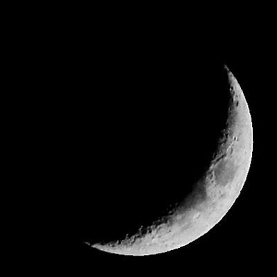
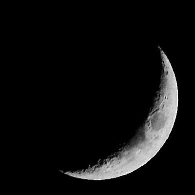

Phases of the Moon
Drag the slider to change the speed!
 

Image credit: Hamed Rajabpour and Nariman Ghorbani (CC BY-SA 4.0). Image sliced and animated by Stephen Lee
What are Phases?
As the Moon revolves around the Earth, it appears to change shape. This is because the sunlit side sometimes faces directly toward the Earth (creating a full moon) and sometimes faces in other directions, creating crescent, quarter, and gibbous moons.
When the Moon is between the Earth and the Sun, the sunlit side faces directly away from the Earth. This is known as a new moon.
Contrary to popular belief, there is no dark side of the Moon. With the exception of lunar eclipses, one half of the moon is always lit by the sun. Sorry, Pink Floyd!
List of Phases
- New moon: Unlit
- Waxing crescent: Partly lit
- First quarter: Half lit
- Waxing gibbous: Mostly lit
- Full moon: Fully lit
- Waning gibbous: Mostly lit
- Last quarter: Half lit
- Waning crescent: Partly lit
List of phases taken from Wikipedia's Lunar phase article.